Week 2: 2D Design & Cutting
Assignment 1: Make a Box
I actually made two versions of the box, which followed roughly the same principle. Pictured below is the first version, which unfortunately had too big of a kerf (0.3mm) and would not friction fit-together properly.
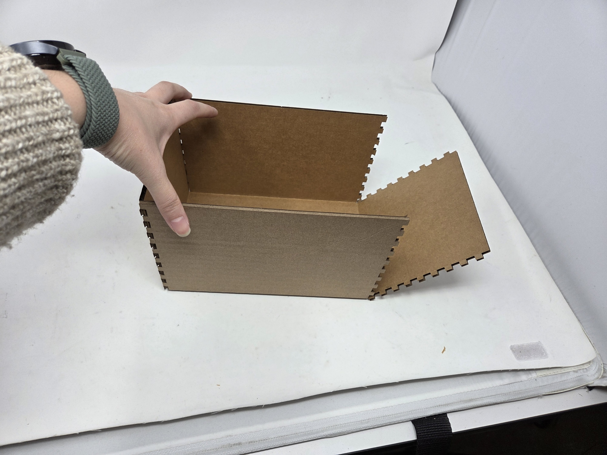
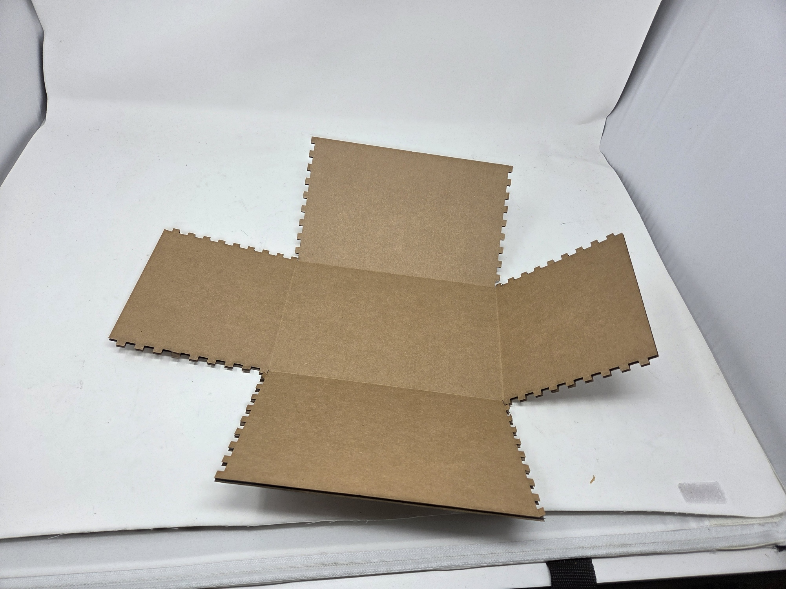
Below is the laser cutting template I decided to use for my final box. The box was 220mm x 140mm x 140mm for dimensions, with 9 teeth on each side. I used a smaller kerf value of 0.25 mm to offset the cut lines appropriately. I also added two cutouts of a duck svg that I traced off of an image I had for decoration.
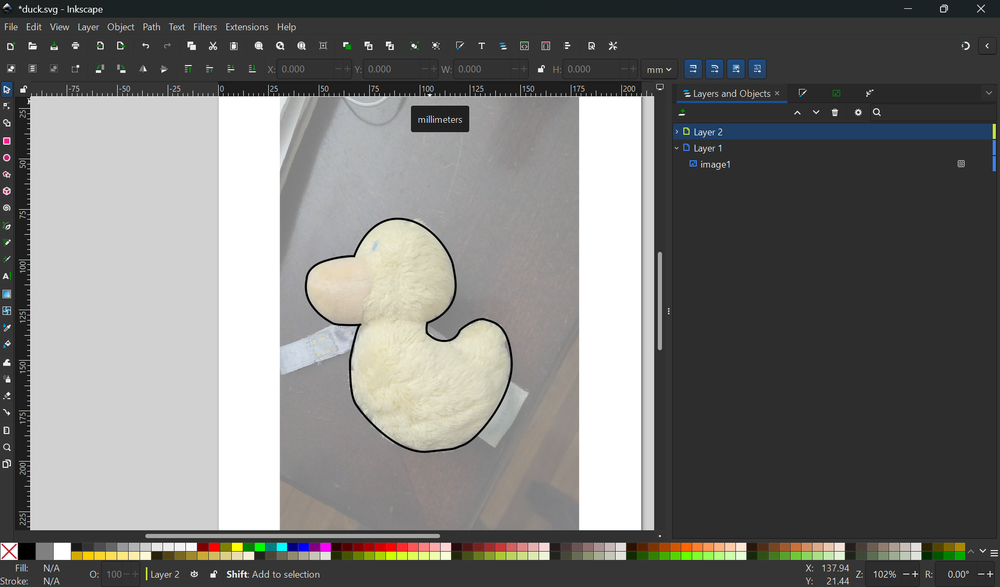
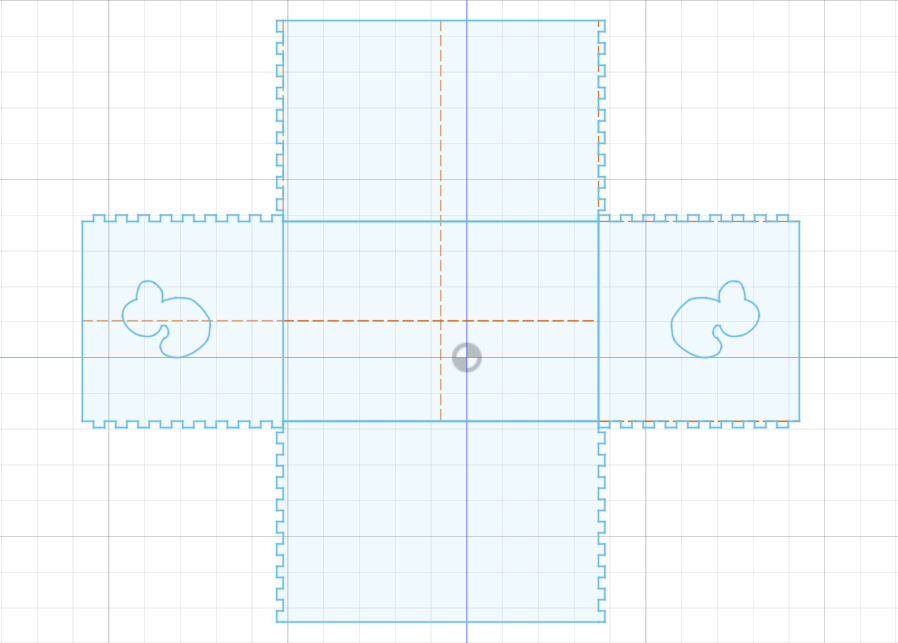
The final box came out pretty well and friction fit together. I also had the two duck shaped cut out pieces which I could use for further decoration.
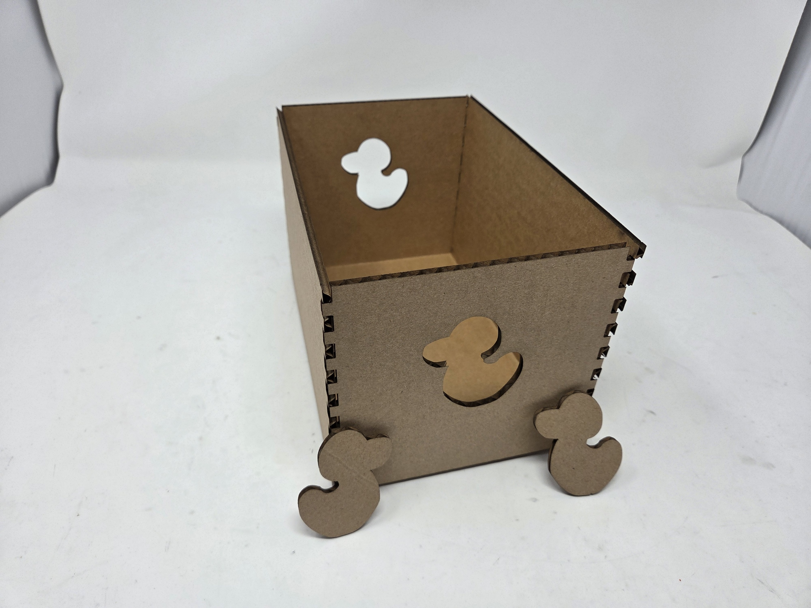
In order to make the duck shaped pieces more interesting, I cut out two yellow vinyl stickers of the same duck shape in the exact same size in order to stick them onto the cutout.
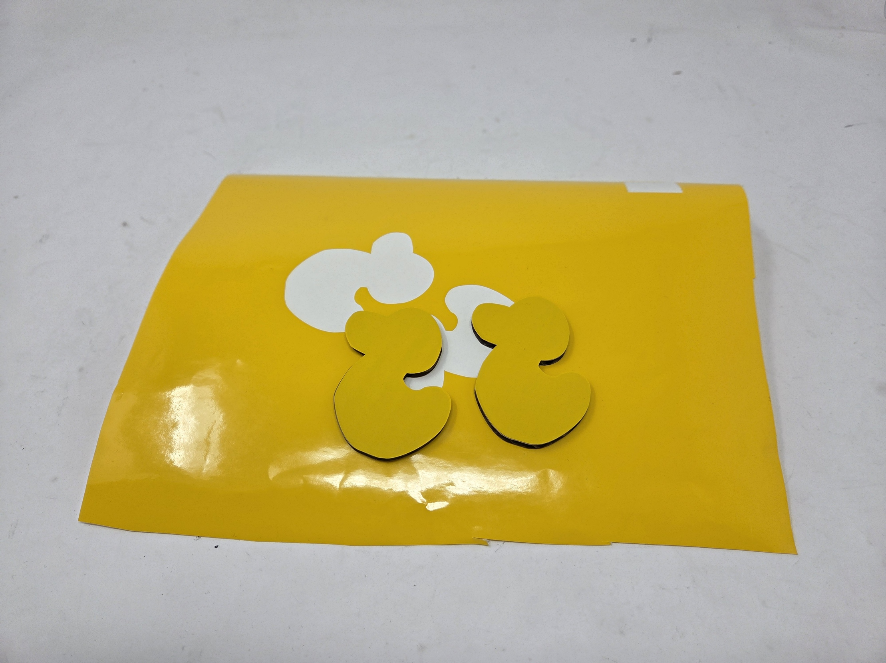
Lastly, I hot glued the decorated duck cut outs onto the other two sides of the box for additional decoration. I also added a small amount of hot glue to the inside seams of the box to ensure that it stays together for the whole semester. I also really like that the side duck cutouts also function as carrying handles for the box, as seen in the second picture.

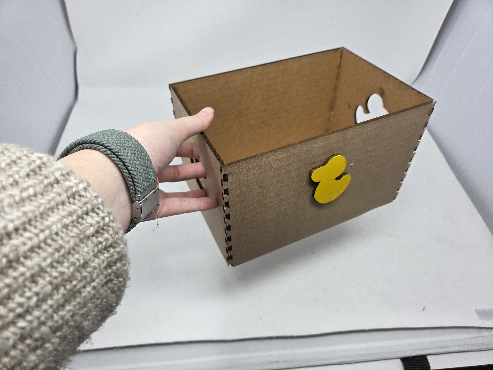
Assignment 2: Fusion 360 Tutorial
For learning how to use fusion better, I decided to complete the first 4 days of Learn Fusion 360 in 30 Days on YouTube. Below are the results of the models made for the first 4 days of the tutorial. I also tried experimenting with the models they guided me through, like adding a cap to the complex glass bottle model and changing its parameters a little to make it more unique.
Day 1: Toy Block
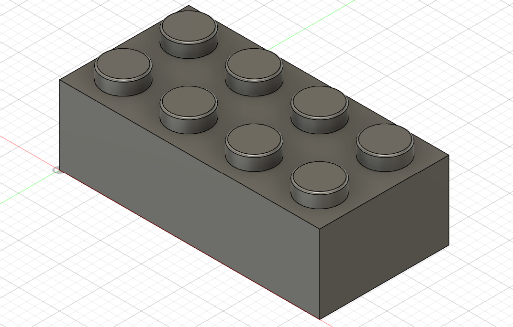
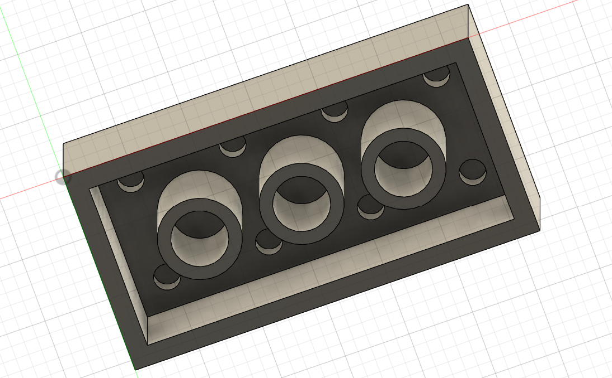
Download Jigsaw Box Model
Day 2: Glass Bottle
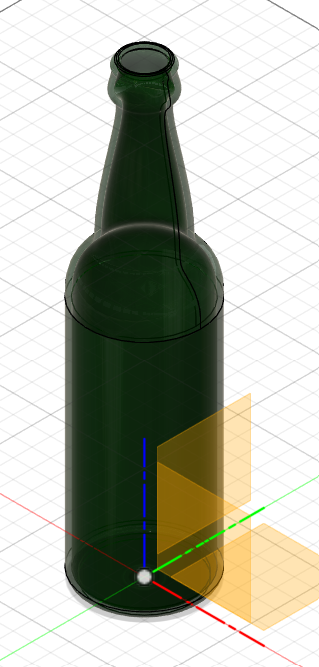
Download Glass Bottle Model
Day 3: Paperclip
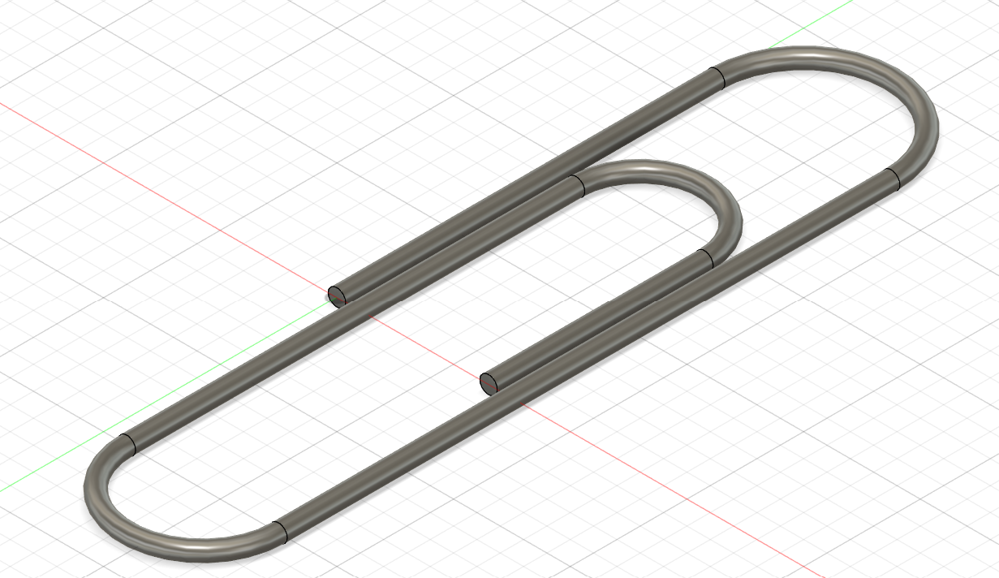
Download Paperclip Model
Day 4: Complex Bottle
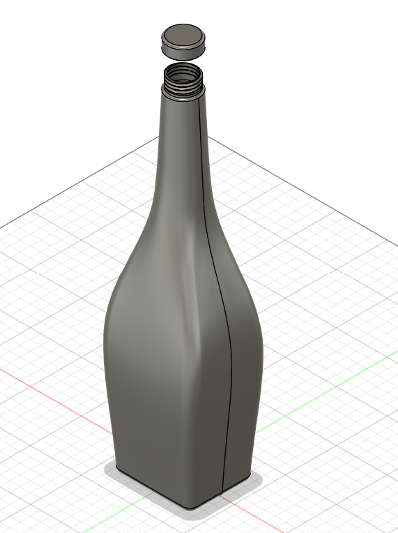
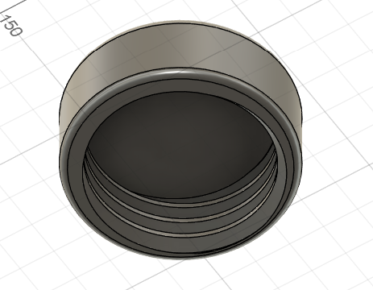
I also added matching threading on the bottlecap.
Download Complex Bottle Model
Assignment 3: Fusion Modeling
For my fusion models, I decided to model seam rippers and a pair of scissors. Since I'm interested in doing some sewing for my final project, both of these tools will definitely be useful. I modelled the seam rippers on my own, but did consult this tutorial while modelling the scissors.
Measurements
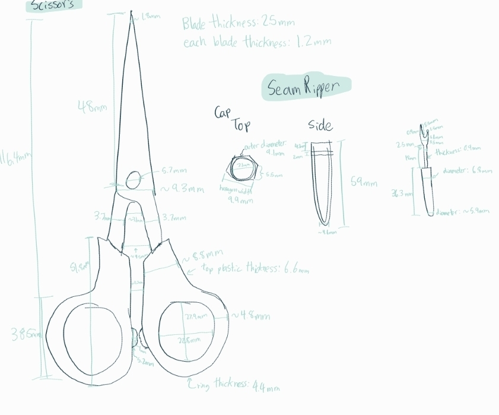
Seam Ripper
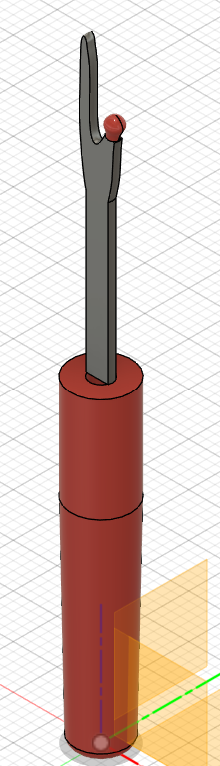
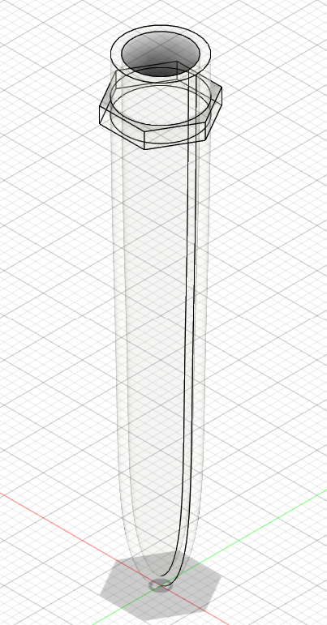
Download Seam Ripper ModelDownload Seam Ripper Cap Model
Scissors
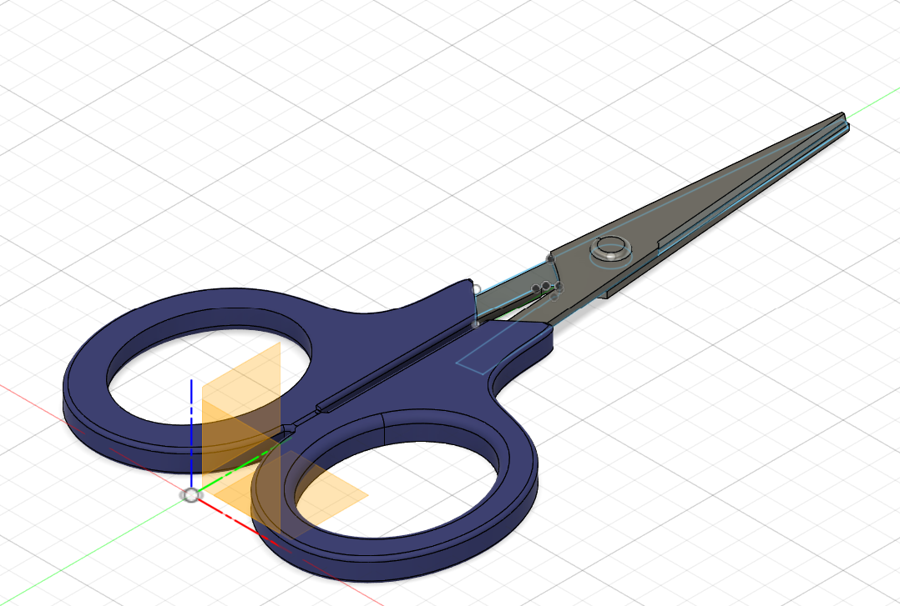
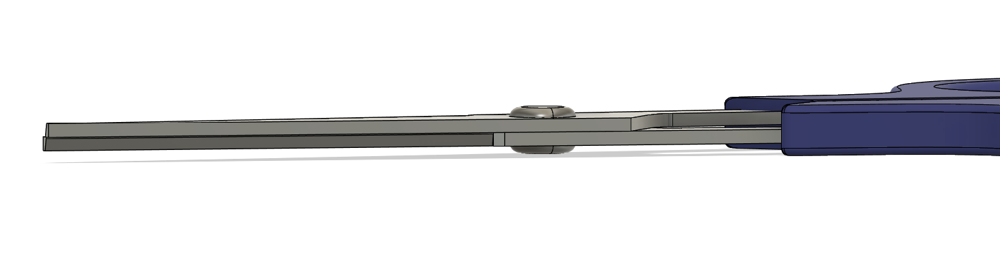
Notice that the two blades of the scissors are both modelled and they don't intersect.
Download Scissors Model
For my assembly, I placed both the seam ripper and the scissors into a wooden dish (like a trinket dish), which I'd imagine you'd find near many sewing machines.
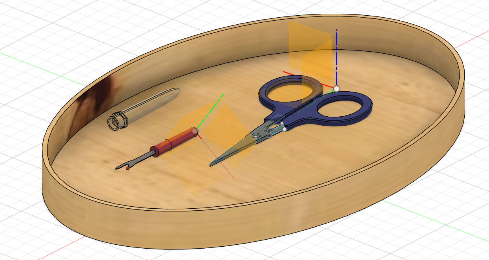
Download Sewing Dish Assembly Model